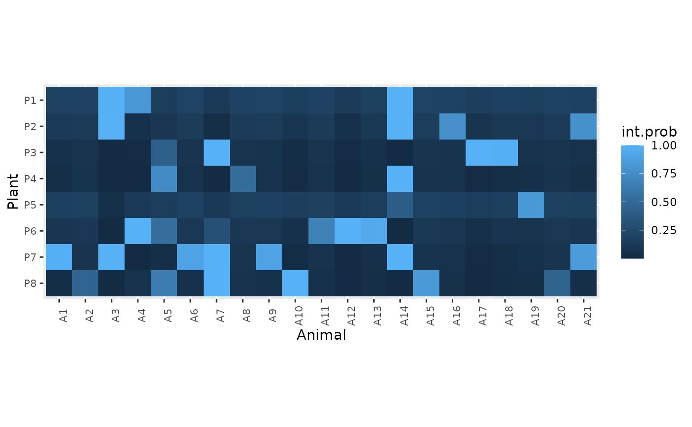
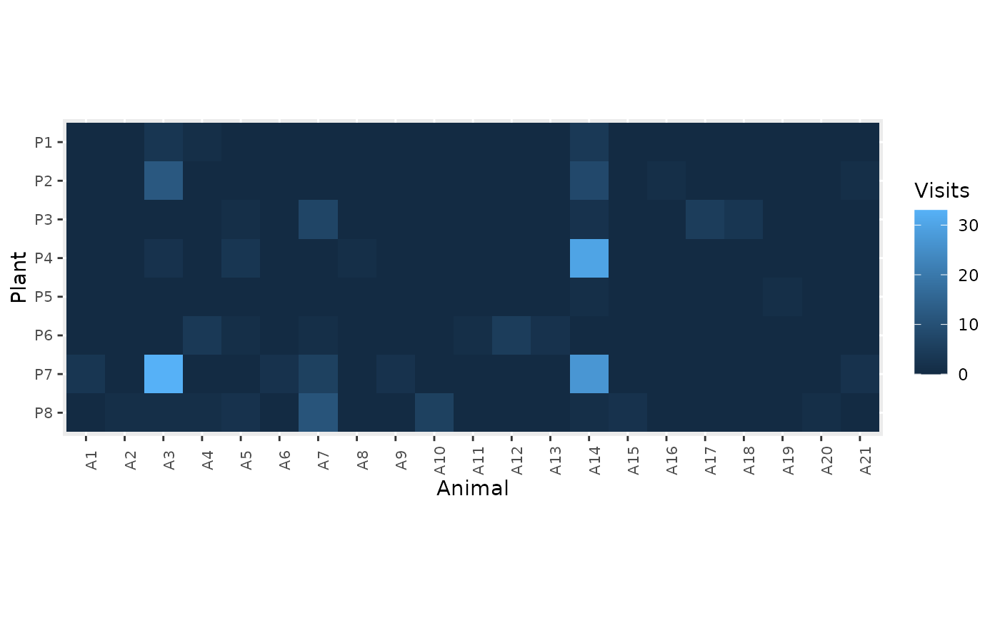

Get posterior values
get_posterior(
fit = NULL,
data = NULL,
param = c("all", "connectance", "preference", "plant.abund", "animal.abund",
"int.prob", "link")
)Fitted model (from fit_model())
Data list (from prepare_data())
character. Name of the parameter to retrieve the posterior samples.
A data frame
data(web)
dt <- prepare_data(mat = web, sampl.eff = rep(20, nrow(web)))
fit <- fit_model(dt, refresh = 0)
#> Running MCMC with 4 sequential chains...
#>
#> Chain 1 finished in 1.2 seconds.
#> Chain 2 finished in 1.3 seconds.
#> Chain 3 finished in 1.2 seconds.
#> Chain 4 finished in 1.2 seconds.
#>
#> All 4 chains finished successfully.
#> Mean chain execution time: 1.2 seconds.
#> Total execution time: 5.3 seconds.
#>
get_posterior(fit, dt, param = "connectance")
#> # A tibble: 4,000 × 4
#> .chain .iteration .draw connectance
#> <int> <int> <int> <dbl>
#> 1 1 1 1 0.201
#> 2 1 2 2 0.336
#> 3 1 3 3 0.246
#> 4 1 4 4 0.324
#> 5 1 5 5 0.198
#> 6 1 6 6 0.237
#> 7 1 7 7 0.227
#> 8 1 8 8 0.334
#> 9 1 9 9 0.209
#> 10 1 10 10 0.353
#> # ℹ 3,990 more rows
int.prob <- get_posterior(fit, dt, param = "int.prob")
int.prob
#> # A tibble: 672,000 × 6
#> # Groups: Plant, Animal [168]
#> Plant Animal int.prob .chain .iteration .draw
#> <chr> <chr> <dbl> <int> <int> <int>
#> 1 P1 A1 0.129 1 1 1
#> 2 P1 A1 0.285 1 2 2
#> 3 P1 A1 0.227 1 3 3
#> 4 P1 A1 0.256 1 4 4
#> 5 P1 A1 0.175 1 5 5
#> 6 P1 A1 0.125 1 6 6
#> 7 P1 A1 0.195 1 7 7
#> 8 P1 A1 0.288 1 8 8
#> 9 P1 A1 0.142 1 9 9
#> 10 P1 A1 0.310 1 10 10
#> # ℹ 671,990 more rows
int.prob |> tidybayes::mean_qi() # mean edge probability
#> # A tibble: 168 × 8
#> Plant Animal int.prob .lower .upper .width .point .interval
#> <chr> <chr> <dbl> <dbl> <dbl> <dbl> <chr> <chr>
#> 1 P1 A1 0.191 0.0852 0.310 0.95 mean qi
#> 2 P1 A10 0.169 0.0649 0.286 0.95 mean qi
#> 3 P1 A11 0.189 0.0435 0.325 0.95 mean qi
#> 4 P1 A12 0.133 0.0260 0.258 0.95 mean qi
#> 5 P1 A13 0.182 0.0484 0.309 0.95 mean qi
#> 6 P1 A14 1.00 0.999 1.00 0.95 mean qi
#> 7 P1 A15 0.197 0.0342 0.322 0.95 mean qi
#> 8 P1 A16 0.188 0.0430 0.327 0.95 mean qi
#> 9 P1 A17 0.158 0.0490 0.281 0.95 mean qi
#> 10 P1 A18 0.185 0.0710 0.302 0.95 mean qi
#> # ℹ 158 more rows
# plot
int.prob |>
tidybayes::mean_qi() |>
dplyr::select(Plant, Animal, int.prob) |>
network.tools::plot_web_heatmap(int.var = "int.prob", sort = FALSE)

# compare with Visits
web |>
network.tools::wide2long() |>
network.tools::plot_web_heatmap(zero.na = FALSE, sort = FALSE)

# all posteriors
get_posterior(fit, dt, param = "all")
#> # A tibble: 672,000 × 11
#> # Groups: Plant, Animal [168]
#> Plant Animal .chain .iteration .draw connectance preference plant.abund
#> <chr> <chr> <int> <int> <int> <dbl> <dbl> <dbl>
#> 1 P1 A1 1 1 1 0.201 46.0 0.0190
#> 2 P1 A2 1 1 1 0.201 46.0 0.0190
#> 3 P1 A3 1 1 1 0.201 46.0 0.0190
#> 4 P1 A4 1 1 1 0.201 46.0 0.0190
#> 5 P1 A5 1 1 1 0.201 46.0 0.0190
#> 6 P1 A6 1 1 1 0.201 46.0 0.0190
#> 7 P1 A7 1 1 1 0.201 46.0 0.0190
#> 8 P1 A8 1 1 1 0.201 46.0 0.0190
#> 9 P1 A9 1 1 1 0.201 46.0 0.0190
#> 10 P1 A10 1 1 1 0.201 46.0 0.0190
#> # ℹ 671,990 more rows
#> # ℹ 3 more variables: animal.abund <dbl>, int.prob <dbl>, link <int>